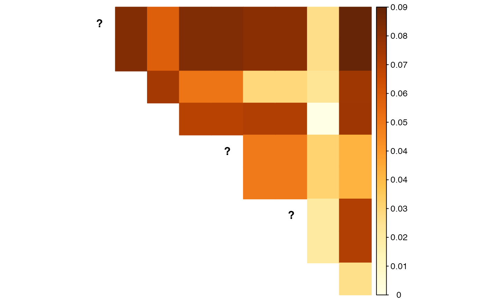

Abstract
We demonstrate our new moment-based linkage disequilibrium (LD) estimators, as implemented in the ldfast() function. The following code chunks are only evaluated if updog is installed with a version of at least 2.0.2.
Analysis
We will load the packages and data that we will need
library(updog)
library(ldsep)
library(corrplot)
#> corrplot 0.84 loaded
data("uit", package = "ldsep")
class(uit)
#> [1] "multidog"We need the posterior probabilities for each genotype for each individual at each SNP. In updog, this corresponds to the Pr_n variables in its output, where n varies from 0 to the ploidy. We can use updog::format_multidog() to extract these values into an array with the proper dimensions.
ploidy <- 4
gp <- format_multidog(x = uit, varname = paste0("Pr_", 0:ploidy))
class(gp)
#> [1] "array"
dim(gp)
#> [1] 10 84 5The first dimension indexes the SNPs, the second dimension indexes the individuals, and the third dimension indexes the possible dosages. So gp[i, j, k] contains the posterior probability that individual j has dosage k-1 at SNP i. You can use other genotyping programs to obtain these posterior probabilities, but they have to be formatted as an array with the dimensions in the correct order (SNPs by individuals by dosages).
If you only have genotype log-likelihoods, we can normalize these to posterior probabilities (assuming a uniform prior) with ldsep::gl_to_gp().
gl <- format_multidog(x = uit, varname = paste0("logL_", 0:ploidy))
gp2 <- gl_to_gp(gl = gl)Let’s use our original genotype posterior probabilities (gp) to estimate LD since the prior used there was adaptive to the data (but for large sample sizes this does not really matter).
ldout <- ldfast(gp = gp, type = "r2")ldout contains:
-
ldmat: The estimated squared correlation coefficients, adjusted for genotype uncertainty.corrplot(corr = ldout$ldmat, method = "color", type = "upper", diag = FALSE, tl.pos = "n")
-
semat: The estimated standard errors for the squared correlation coefficient estimates.corrplot(corr = ldout$semat, method = "color", type = "upper", diag = FALSE, tl.pos = "n", is.corr = FALSE)
-
rr: The estimated “reliability ratios”, the multiplicative effects applied to the naive LD estimates using just the posterior mean genotypes.graphics::hist(x = ldout$rr, main = "Reliability Ratios", xlab = "Reliability Ratios")
The slowest part of ldfast() is using hierarchical shrinkage on the log of the reliability ratios (shrinkrr = TRUE), but I wouldn’t disable this as some reliability ratios have high variance and are greatly improved through shrinkage.
Other LD estimators are available: D, Dprime, r, and z. See the help file of ldfast() for details.